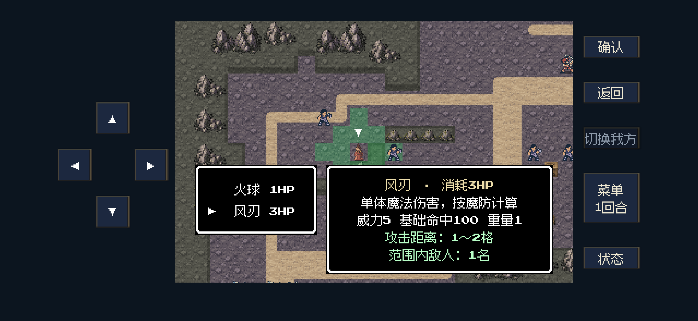
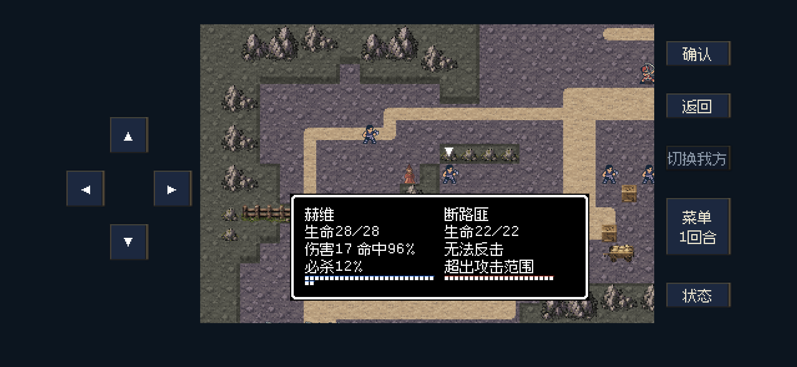

魔法说明、风刃计距与矿道敌军
风刃基础射程1～2格。中间空1格是距离2，中间空2格是距离3；斜向按横向与纵向相加。实际距离2格的选敌与普通确认施放已通过，基础射程没有改变。
切换魔法显示效果、威力、基础命中、重量、消耗、射程和可选目标数，绿色范围随选中条目变化。横屏列表与说明并排，并保留施法者及光标可见。治疗、传送、召唤等显示各自的效果与范围。
文字更新：已删除计距公式行，详情正文改用12px清晰字形，并精简为四行信息。
按要求增强S11六名敌人
| 单位 | 数量 | 力量 | 装备后攻击 | 速度 |
|---|
| 盗掠首领 | 1 | 9→13 | 11→15 | 5→9 |
| 断路匪 | 5 | 9→10 | 9→10 | 3→4 |
旧存档按版本依次升级，重试快照一并更新；保留当前伤势、位置、回合和随机数，重复读档不叠加。弓手及其它地图敌军数值本次保持。
26项规则／输入检查、41项后台呈现检查及33项既有回归通过。S11正常输入13回合通关，两组矿工撤离、贝克战后流程完成；达恩、奥托本轮濒死。不是连续新档或真机试玩，未更新iPhone。
完整修改依据与MD表格 · 规则与操作检查 · 呈现与安全区检查 · 通关摘要
切换风刃：效果、实际射程与绿色范围同时可见，施法者和光标未被面板遮挡
确认风刃：直线距离2格的敌人进入选敌预览，普通近战无法在该距离反击